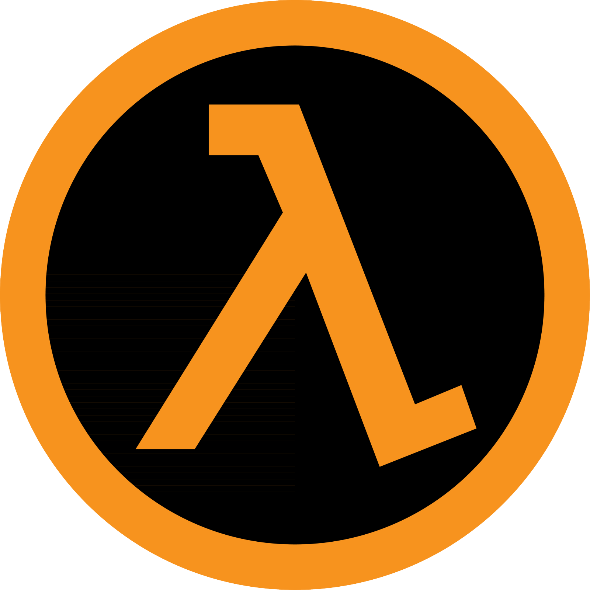
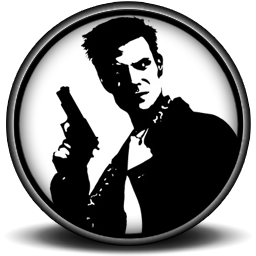

El Half Life
 HλLF-LIFE) es un videojuego del género ciencia ficción y disparos en primera persona desarrollado por Valve Corporation. Supuso este juego el debut de la compañía y el primero de lo que posteriormente pasaría a ser la serie Half-Life. El título, distribuido por Sierra Studios, fue lanzado el 19 de noviembre de 1998. También se publicó una nueva versión para PlayStation 2 el 14 de noviembre de 2002. La trama de Half-Life tiene lugar en una época relativamente actual, pero desconocida.
El Super Mario Bros
 es un videojuego de plataformas, diseñado por Shigeru Miyamoto, lanzado el 13 de septiembre de 1985 y producido por la compañía Nintendo, para la consola Nintendo Entertainment System (NES). El juego describe las aventuras de los hermanos Mario y Luigi, personajes que ya protagonizaron el arcade Mario Bros. de 1983. En esta ocasión ambos deben rescatar a la Princesa Peach del Reino Champiñón que fue secuestrada por el rey de los Koopas, Bowser. A través de ocho diferentes mundos, los jugadores pueden controlar a alguno de los dos hermanos y deben enfrentarse finalmente tras los niveles correspondientes de cada mundo a los monstruos de cada castillo para rescatar a la Princesa Peach.
Super Mario Bros. fue el juego que popularizó al personaje de Mario4, convirtiéndolo en el ícono principal de Nintendo, y uno de los personajes más reconocidos de los videojuegos, así como su hermano menor Luigi. Además, presentó por primera vez a la Princesa Peach Toadstool, Toad, Bowser, entre otros personajes. Este juego es considerado el primer videojuego de plataformas de desplazamiento lateral de Nintendo y se ha convertido en un hito debido a la trascendencia de su diseño y papel en la industria de los videojuegos. Su lanzamiento fue el primer gran récord de ventas posterior a la crisis de la industria de los videojuegos de 1983 (alcanzando más de 10 millones de cartuchos vendidos), por lo que popularizó, en cierta manera, a la consola NES. En 1999 fue reconocido como uno de los videojuegos más vendidos de todos los tiempos.5 Shigeru Miyamoto su creador, relata la existencia de Super Mario Bros. debido a que cuando viajaba en un tren le gustaba mirar por la ventana, y se imaginaba que estaba allí saltando afuera.6 Debido a la popularidad de Mario, se encuentra también en otros videojuegos como el original Donkey Kong y Super Smash Bros.
es un videojuego de plataformas, diseñado por Shigeru Miyamoto, lanzado el 13 de septiembre de 1985 y producido por la compañía Nintendo, para la consola Nintendo Entertainment System (NES). El juego describe las aventuras de los hermanos Mario y Luigi, personajes que ya protagonizaron el arcade Mario Bros. de 1983. En esta ocasión ambos deben rescatar a la Princesa Peach del Reino Champiñón que fue secuestrada por el rey de los Koopas, Bowser. A través de ocho diferentes mundos, los jugadores pueden controlar a alguno de los dos hermanos y deben enfrentarse finalmente tras los niveles correspondientes de cada mundo a los monstruos de cada castillo para rescatar a la Princesa Peach.
Super Mario Bros. fue el juego que popularizó al personaje de Mario4, convirtiéndolo en el ícono principal de Nintendo, y uno de los personajes más reconocidos de los videojuegos, así como su hermano menor Luigi. Además, presentó por primera vez a la Princesa Peach Toadstool, Toad, Bowser, entre otros personajes. Este juego es considerado el primer videojuego de plataformas de desplazamiento lateral de Nintendo y se ha convertido en un hito debido a la trascendencia de su diseño y papel en la industria de los videojuegos. Su lanzamiento fue el primer gran récord de ventas posterior a la crisis de la industria de los videojuegos de 1983 (alcanzando más de 10 millones de cartuchos vendidos), por lo que popularizó, en cierta manera, a la consola NES. En 1999 fue reconocido como uno de los videojuegos más vendidos de todos los tiempos.5 Shigeru Miyamoto su creador, relata la existencia de Super Mario Bros. debido a que cuando viajaba en un tren le gustaba mirar por la ventana, y se imaginaba que estaba allí saltando afuera.6 Debido a la popularidad de Mario, se encuentra también en otros videojuegos como el original Donkey Kong y Super Smash Bros.
Max Payne
 Max Payne es un videojuego de disparos en tercera persona y entorno 3D desarrollado para Microsoft Windows por la empresa finlandesa Remedy Entertainment, escrito por Sam Lake, producido por 3D Realms y publicado por Gathering of Developers en julio de 2001. El juego también fue llevado a otras plataformas como Xbox, PlayStation 2, Macintosh y Game Boy Advance. También se tenía que planificar una versión para Dreamcast, pero se canceló por razones que se desconocen.
El Doom 1
 es un videojuego de disparos en primera persona creado por la compañía estadounidense ID Software en 1993 bajo la dirección de John Carmack y diseñado por John Romero, originalmente para el sistema operativo DOS y programado sobre una plataforma de computadoras NeXTSTEP.1
A nivel de argumento, el juego consiste en comandar a un marine, que se encuentra de misión rutinaria en una estación en Fobos (una de las lunas de Marte), cuando de repente se produce un fallo en un experimento de teleportación que se llevaba a cabo allí, abriéndose así las puertas del infierno y dejando libres a un sinfín de demonios, y espíritus malignos que se apoderan de los cuerpos de los marines caídos, transformándolos en zombis, infestando rápidamente todas las instalaciones. Como protagonista, el jugador es el único ser humano sobreviviente en la estación y su misión es abrirse paso entre los enemigos nivel a nivel, muy al estilo de Wolfenstein 3D, que fue el primer videojuego de este género desarrollado por ID Software. No obstante, el perfeccionamiento tecnológico permitió que Doom fuera una obra con muchos elementos nuevos y mayor profundidad jugabilística que su predecesor.
Doom fue uno de los juegos más reconocidos de 1993, fue tan jugado en ese año, que la mayoría de los PC tenían instalado este juego. Doom era altamente fácil de modificar, y gracias a eso los jugadores empezaron a crear sus propios mapas. Doom fue el primero de una exitosa serie que popularizó la mayoría de los aspectos de los juegos de disparos en primera persona. Muchos afirman que fue Doom el que creó la plataforma y las pautas que los demás juegos de este género habrían de seguir,[cita requerida] además de que en términos de creatividad, permitió que se introdujeran las expansiones y los niveles creados por mismos usuarios del juego, los WAD.
es un videojuego de disparos en primera persona creado por la compañía estadounidense ID Software en 1993 bajo la dirección de John Carmack y diseñado por John Romero, originalmente para el sistema operativo DOS y programado sobre una plataforma de computadoras NeXTSTEP.1
A nivel de argumento, el juego consiste en comandar a un marine, que se encuentra de misión rutinaria en una estación en Fobos (una de las lunas de Marte), cuando de repente se produce un fallo en un experimento de teleportación que se llevaba a cabo allí, abriéndose así las puertas del infierno y dejando libres a un sinfín de demonios, y espíritus malignos que se apoderan de los cuerpos de los marines caídos, transformándolos en zombis, infestando rápidamente todas las instalaciones. Como protagonista, el jugador es el único ser humano sobreviviente en la estación y su misión es abrirse paso entre los enemigos nivel a nivel, muy al estilo de Wolfenstein 3D, que fue el primer videojuego de este género desarrollado por ID Software. No obstante, el perfeccionamiento tecnológico permitió que Doom fuera una obra con muchos elementos nuevos y mayor profundidad jugabilística que su predecesor.
Doom fue uno de los juegos más reconocidos de 1993, fue tan jugado en ese año, que la mayoría de los PC tenían instalado este juego. Doom era altamente fácil de modificar, y gracias a eso los jugadores empezaron a crear sus propios mapas. Doom fue el primero de una exitosa serie que popularizó la mayoría de los aspectos de los juegos de disparos en primera persona. Muchos afirman que fue Doom el que creó la plataforma y las pautas que los demás juegos de este género habrían de seguir,[cita requerida] además de que en términos de creatividad, permitió que se introdujeran las expansiones y los niveles creados por mismos usuarios del juego, los WAD.
El Quake 1
Quake es un videojuego de disparos en primera persona publicado por id Software el 22 de junio de 1996. Introdujo algunos de los mayores avances en el género de los videojuegos en 3D: utiliza modelos tridimensionales para los jugadores y los monstruos en vez de sprites bidimensionales; y el mundo donde el juego tiene lugar está creado como un verdadero espacio tridimensional, en vez de ser un mapa bidimensional con información sobre la altura representada en tres dimensiones. También incorporó la utilización de los mapas de luz y las fuentes de luz en tiempo real, descartando la iluminación estática basada en sectores de los juegos anteriores. Ofreció, en su tiempo, uno de los motores físicos más realistas programados para un videojuego hasta la fecha. Muchos creen que proporcionó la plataforma para la revolución de las tarjetas gráficas 3D independientes, «GLQuake» fue la primera aplicación que, en esos días, demostró la capacidad verdadera del chipset Voodoo Graphics de 3DFX. El impacto del motor Quake engine puede aún sentirse en la actualidad. La mayoría de la programación del motor del Quake fue realizada por John Carmack. Michael Abrash, un especialista en optimización del rendimiento de los programas, fue contratado para ayudar a que el motor de representación por software fuera posible teniendo en cuenta la velocidad. La banda sonora y efectos de sonido fue compuesta por Trent Reznor. Quake y sus secuelas Quake II y Quake III Arena han vendido más de 4 millones de copias juntos. Además de que este juego se planifica lanzar una versión para PlayStation pero luego se canceló por razones que se desconocen.
Desarrollador= Santiago Herbes